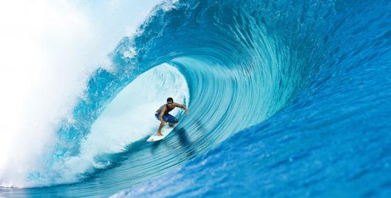

C'est une des composantes de la Performance, au même titre que les préparations physiques, techniques et tactiques.
C'est une commande émanant d'un entraîneur, d'un chef, d'un directeur, et/ou une demande individuelle et personnelle d'une personne. L'individu, l'athlètes doit être volontaire, motivé et acteur de sa préparation
Une évalutation diagnostique permettra la mise en évidence des besoins de chacun, individu ou équipe, visant la réalisation d'une performance, qu'elle soit sportive ou non, afin d'élaborer des objectifs très précis.
L'accompagnement sera basé sur la notion de plaisir afin d'apprendre à mieux se gérer (stress, émotions, confiance en soi, concentration...) à mieux s'organiser, à accepter certains éléments pouvant être pris comme perturbants, faisant souvent barrage à la réalisation d'une performance (évolution des croyances...) et sur l'apprentissage d'habiletés mentales et d'habiletés d'organisation, afin d'optimiser la performance de la personne ou du groupe.
La préparation mentale nécessite l'utilisation de divers outils et techniques dans la recherche de l'optimisation du fonctionnement de la personne et de ses résultat, ainsi qu'un entraînement régulier à ces différents outils et techniques.
Le préparateur mental n'étant qu'un accompagnant, une ressource externe dans la gestion des états mentaux et leur optimisation, sur le chemin de la réussite et de l'autonomie de la personne.
La notion de confidentialité est primordiale.
La préparation mentale peut être abordée dès la pré adolescence.